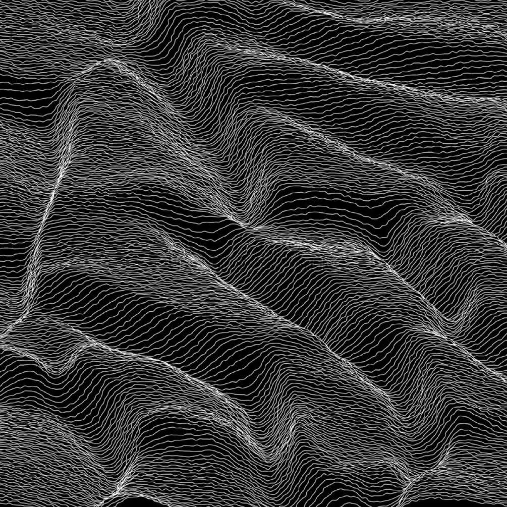
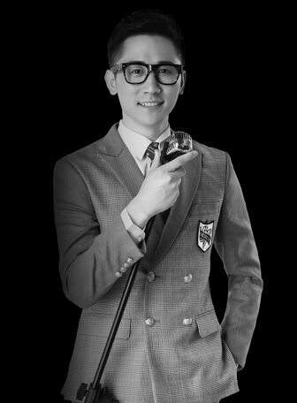

「造就」是一家致力于「发现最有创造力思想」的剧院式演讲平台，创立于 2015
年底，已经成为中国首屈一指的文化创新品牌。造就的听众是来自于各个行业的精英群体，他们对于知识的传播和分享有着热切的渴望。
「造就人文」是造就团队与 SMG LIVE 战略合作，整合资源，在 2018 年全新推出的艺术人文线内容产品。
区别于造就主场以科技、科学等硬知识为主的演讲活动，「造就人文」想要通过不同领域领军者对于同一个主题的不同的认知、思考和发散，呈现这个世界的多样性、多元丰富，更富人文关怀。
造就目前已经邀请超过 350
位嘉宾登上演讲舞台，分享他们作为行业领军者所观察到的未来趋势。作为中国首家剧院场景体验的演讲平台，造就致力于发现世界上最有创造力的思想，寻找最有创见性的思想和实践，相信世界是多维度的生长，追寻在科技、经济、文化等多重领域的前行者。
造就人文会从「视觉」、「听觉」、「味觉」等人类最基础的感知出发，去探索艺术与文化的内涵与边界。

最简单的、最普通的词语「声」出发，去探索声音的形状，去感受声音的力量，去体验声音的魅力，去探寻声音的价值……通过不同艺术、科技领域的领军者对于声音这一主题的不同认知和阐释，展现世界的多元、多维、辨证和美好。
经过宇宙、自然与人之间关系的思考，将声音作为材料，用以表现艺术家本人的艺术与精神世界。而作为介质而存在的声音脱离了物理意义，以一种饱含意义，无边无形的自由展现“艺术”。这种自由即是声音艺术最迷人的地方，相较与其他艺术形式，他不限制于物质和形体。以自由的形式将人类的内心关照展现出来，将美展现出来。
朱哲琴 · 跨界音乐家、看见造物创始人兼艺术总监
二十多年来朱哲琴从音乐出发，开始其漫长的艺术探索之旅，近年其工作与创作已经大量介入到声音、视觉、表演，设计、传媒、公众、社群等领域。不再局限于歌唱家这个标签，朱哲琴不再局限于声音的即有维度；经过宇宙、自然与人之间关系的思考，将声音作为材料，用以表现艺术家本人的艺术与精神世界。而作为介质而存在的声音脱离了物理意义，以一种饱含意义，无边无形的自由展现“艺术”。
经过宇宙、自然与人之间关系的思考，将声音作为材料，用以表现艺术家本人的艺术与精神世界。而作为介质而存在的声音脱离了物理意义，以一种饱含意义，无边无形的自由展现“艺术”。
金培达 · 香港著名作曲家
香港著名作曲家。11 次荣获香港电影金像奖最佳原创音乐与最佳原创歌曲，其中包括广为传唱的《星语心愿》和《如果·爱》。音乐对于电影情节的推动和情绪的渲染达到了出神入化之境。2008
年香港政府为他颁发了荣誉勋章，肯定其音乐成就及艺术领域的卓越贡献。
不再局限于声音的即有维度；经过宇宙、自然与人之间关系的思考，将声音作为材料，用以表现艺术家本人的艺术与精神世界。而作为介质而存在的声音脱离了物理意义，以一种饱含意义，无边无形的自由展现“艺术”。这种自由即是声音艺术最迷人的地方，相较与其他艺术形式，他不限制于物质和形体。以自由的形式将人类的内心关照展现出来，将美展现出来。而这种美，仅存在与声音与艺术的组合中。
>
黄英 · 女高音艺术家
国际音乐权威人士称黄英的演唱极富内涵，音色柔和甜美，花腔技巧灵活，演唱充满激情，堪称中国音乐界最杰出歌唱家之一。《纽约时报》说：黄英柔和优美的音色是最适合演唱莫扎特音乐风格的歌唱家。
经过宇宙、自然与人之间关系的思考，将声音作为材料，用以表现艺术家本人的艺术与精神世界。而作为介质而存在的声音脱离了物理意义，以一种饱含意义，无边无形的自由展现“艺术”。
时海波 · 上海市第六人民医院耳鼻咽喉科行政副主任、
副主任医师、硕导
从事耳鼻咽喉头颈外科医疗工作 20 余年，2006 年获日本九州大学博士学位，2010 年赴美国 House 耳科研究所、2014 年赴德国德累斯顿工业大学附属医院临床进修。2013
年首批入选上海市卫计委新一轮“百人计划”，2015 年首批入选上海市教委“高峰高原学科建设项目”，2017 年入选上海市领军人才。
立即购票
造就之舞·感知与经历的旋涡
——台下十年功，台上十分钟，每一位在舞台上的艺术家，都融入了他从小的梦想，入行后的坚忍以及毕生对舞台的信仰。舞台从来没有变过，当时在它上面上演的内容却不断在变，从古老的到现代的，从东方的到西方的，穿插、交织、更替…从没有一刻间断过在发生变化。今天，舞台的表现形式也发生了巨大的变化，AR、VR，多空间叙事……一切有高科技产生的能量加持这舞台的力量，让我们一起来看看这新的力量下的舞台会给我们什么不可思议的感官刺激？
陈少琪 · 著名填词人，制作人，监制
香港著名音乐人及多方位创作人，涉足音乐、影视、广告、视频节目、艺术等领域。活跃乐坛三十余年，其个人音乐作品超过三千首，代表作《石头记》、《风继续吹》、《夕阳之歌》、《画心》等。亦曾出版小说、散文，撰写电影及舞台剧剧本，举办过多次摄影绘画作品展。横跨30多年的旺盛创造力，跨界艺术如何捕捉灵感？在造就人文的舞台上，他将讲述自己的艺术跨界心路，更有众多巨星合作故事曝光。
“艺术是生活的升华。如果你看到平凡而无特点的东西，能否从中看到不一样的地方？”
陈少琪演讲：当风再起时，我希望出现在你们歌单里的，不只有我的粤语老歌

高山峰 · 动感101及欧美流行音乐电台、KFM981频率总监&主持人
主持广播节目多年，曾担任《彩铃真精彩》、《九点人来疯》、《只爱一点》、《101人来疯》等节目的独立主持工作。其中《九点人来疯》获得“第四届广播娱乐节目评析研讨”全国一等奖。同时曾担任《为何逗》、《光阴的歌》等电视节目的主持人。
“广播的魅力在于，你永远都不知道下一首播放的是什么样的歌曲”
高山峰演讲：从打杂小朋友，到东方风云榜总导演，小人物也能实现大大的梦想
陶冶 · 陶身体剧场艺术总监、编舞
陶冶出生于重庆，曾在上海金星舞蹈团和北京现代舞团担任舞者。23岁创立陶身体剧场，以个
人舞蹈风格开发建立了圆运动训练体系。27岁受邀在世界顶级艺术节美国纽约林肯艺术中心演出。2012年被权威机构英国Sadler’s Wells评选为New Wave
Assciates世界六位编舞家其中之一。曾应邀跨界电影、戏剧、服装设计、影像等艺术形式。
你真的了解你的身体吗？从生到死，身体才是我们理解万事万物的载体。在重力的枷锁下，我们的身体如何突破极限，抵达生命中最单纯的圆满？这一次，陶冶为我们讲述那份舞台上流逝的永恒。
“瞬间即永恒，舞蹈就是这么一个遗憾的艺术，每一个瞬间都会逝去，我一直告诫舞者不要迷恋在舞台上那一刻的表达，当大幕落下，你又变成一个孤独的个体。”
陶冶演讲：我用舞蹈对抗人生最终极的一种恐惧
张军 · 昆曲艺术家、联合国教科文组织和平艺术家、 国家一级演员
实验昆曲，如何演绎人类亘古不变的情感神话？昆曲长生不老，至今仍能直抵人心的秘诀是什么？对爱不同层次，不同阶段的理解，如何影响了张军对昆曲的理解和演绎？
台上人浅唱低吟的正是台下一对对眷侣并肩缱绻的那一刻，从古至今，人们内心深处对幽微曲折情感的诉求都未改变。若你还没未爱上昆曲，一定是还不够了解它。
“所有伟大的艺术都在给我们一次机会，久别重逢。”
张军演讲：我们从厅堂唱到万人会场，只为证明自己要活着！
从文字、声音、视觉到舞台综合艺术，四位不同领域的艺术家们跨领域共同呈现了造就人文首场精彩talk。人文艺术本身所具有的强烈共情能力让现场观众无不入戏三分，回味无穷。造就人文的创办宗旨，也正是在无数喧嚣技术向我们承诺美好未来的当下，让我们保持清醒，思考生活的核心内涵——人文价值。